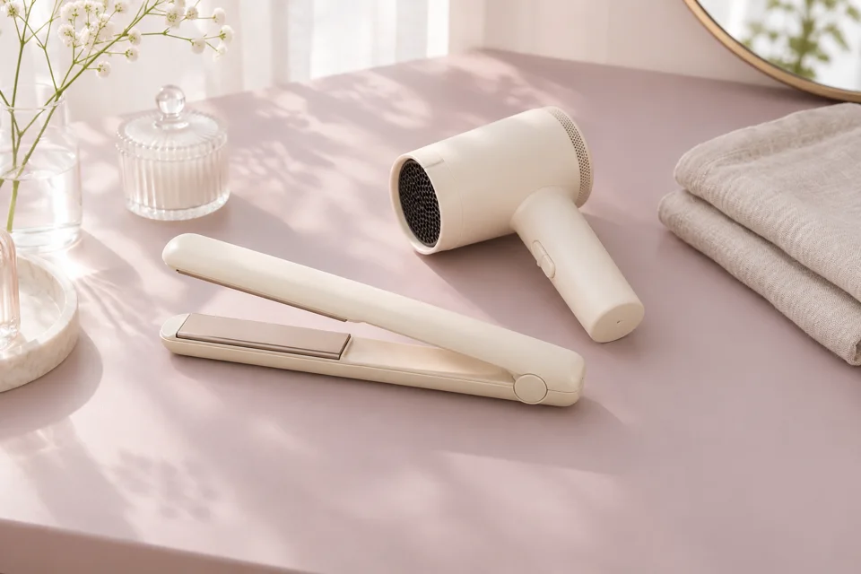

HAIR CARE
ヘアアイロンの前に、髪はどこまで乾かす？
表面が乾いて見えても、内側や毛先を確認。朝のセットで見落としやすい順番をまとめました。

根元と内側、毛先まで乾かす
一般的なヘアアイロンは、髪をしっかり乾かしてから使います。表面だけで判断せず、髪を分けて内側や襟足を触ってみてください。毛先に湿りが残っているなら、先にドライヤーで乾かしましょう。
毛束を分けて、同じ場所に繰り返し当てない
一度に多く挟もうとせず、扱いやすい量に分けると手順を整理できます。同じ部分に何度も当てることは避け、温度や動かし方は機種の説明書に沿って調整してください。
スタイリング剤は使う順番も確認
アイロン前に使えるかどうかは製品によって違います。スタイリング剤の表示とアイロンの説明書の両方を確認し、指定された使い方に合わせましょう。